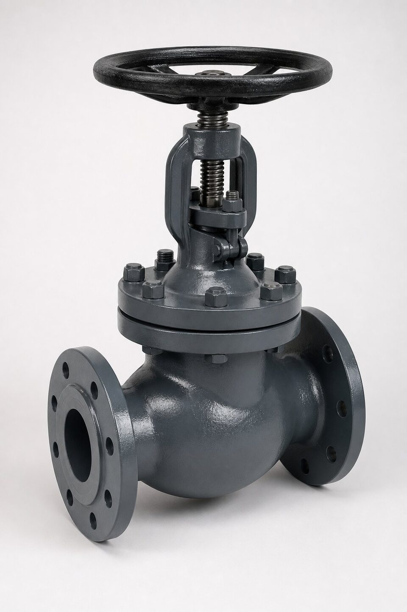

ماهیت سرویس بخار
بخار همزمان دمای بالا، فشار و سیکلهای حرارتی مکرر را به شیر تحمیل میکند. این ترکیب، متریال، طراحی آببندی و نوع شیر را محدود میکند. انتخاب نادرست در این سرویس، نشتی زودرس و توقف خط را به همراه دارد.

انواع مناسب
| نوع شیر | نقش در مدار بخار | ملاحظه |
|---|---|---|
| دروازهای | قطع کامل خطوط اصلی | افت فشار کم |
| کروی | کنترل و قطع نقاط فرعی | تحمل سیکل خوب |
| توپی (محدود) | سرویسهای خاص با متریال مناسب | بررسی دقیق نشیمنگاه |
| اطمینان | حفاظت فشار | مرجع جداگانه |
متریال و محدودیت دما
- فولاد کربنی برای محدوده دمایی متعارف خطوط بخار.
- آلیاژهای کروم-مولیبدن برای دماهای بالاتر.
- تریم متناسب با سیکل و سایش.
- پکینگ گرافیتی برای دمای بالا.
- پیچها و گسکتهای هماهنگ با دما.
سیکل حرارتی و آببندی
هر بار گرم و سرد شدن خط، انبساط و انقباض اجزا را به همراه دارد. نقاط حساس عبارتند از: نشیمنگاه، پکینگ ساقه و اتصال فلنجی. انتخاب طرحهای منعطف و کنترل گشتاور پیچها در راهاندازی و نگهداری، عمر آببندی را افزایش میدهد.
نکات استعلام
- فشار و دمای بخار را صریح ذکر کنید.
- نقش شیر در مدار را مشخص کنید.
- متریال بدنه و تریم متناسب با دما انتخاب کنید.
- پکینگ دمای بالا را در سفارش قید کنید.
- الزامات تست و مدارک را بنویسید.
محدودههای دمایی و متریال
| محدوده دما | متریال رایج بدنه | ملاحظه |
|---|---|---|
| متعارف | فولاد کربنی | اقتصادی و رایج |
| بالاتر از متعارف | کروم-مولیبدن ملایم | شروع محدودیت کربنی |
| دمای بالا | کروم-مولیبدن بالاتر | الزام عملیات حرارتی مناسب |
مرزهای دقیق را جداول متریال و مشخصه پروژه تعیین میکنند.
راهاندازی و سیکلها
- گرم کردن تدریجی خط برای کاهش شوک حرارتی.
- کنترل گشتاور پیچهای فلنج پس از اولین سیکل.
- بازرسی پکینگ پس از پایدار شدن دما.
- ثبت تعداد سیکلها برای برنامه نگهداری.
بخش مهمی از عمر شیر بخار در لحظات راهاندازی و تغییر بار رقم میخورد؛ زمانی که دما و فشار با سرعت تغییر میکنند. برنامهریزی برای گرمکردن تدریجی، پایش انبساط خط و بازرسی پس از اولین سیکلها، سرمایهگذاری کوچکی است که عمر شیر و خط را تضمین میکند. در پروژههای بزرگ، ثبت سیکلهای حرارتی به عنوان شاخص نگهداری توصیه میشود.
خطاهای رایج بهرهبرداری شیرهای بخار
بیشتر خرابیهای شیر در سرویس بخار، نه از انتخاب اشتباه اولیه، بلکه از رفتار نادرست در بهرهبرداری ناشی میشوند؛ شناخت این الگوها عمر شیرها را چند برابر میکند. اولین و رایجترین خطا، استفاده از شیرهای قطع برای کنترل جریان است؛ شیرهایی که برای قطع و وصل طراحی شدهاند، در وضعیت نیمهباز دچار سایش شدید نشیمن و ارتعاش میشوند و اگر نیاز به کنترل دبی دارید، باید شیر کنترل اختصاصی در نظر گرفته شود. دوم، راهاندازی سریع خط بخار سرد است؛ باز کردن ناگهانی شیر و ورود بخار داغ به خط سرد، هم تنش حرارتی شدید به بدنه و نشیمن وارد و هم با میعان حجمی بخار، پدیده ضربه قوچ ایجاد میکند که میتواند به صورت مکانیکی به دیسک و نشیمن آسیب بزند. رویه درست، گرم کردن تدریجی خط با سرعت کنترلشده و تخلیه میعان از نقاط تخلیه قبل از راهاندازی کامل است. سوم، نادیده گرفتن نشتیهای کوچک از آببندی گلوگاه است؛ نشتی بخار از ناحیه پکینگ اگر به موقع رفع نشود، هم انرژی قابل توجهی هدر میدهد و هم با خشک شدن و تخریب پکینگ، به نشتی بزرگتر تبدیل میشود. چهارم، کار کردن شیر در شرایط بالاتر از کلاس فشاری اسمی آن است؛ دما و فشار با هم بر ظرفیت مجاز بدنه اثر دارند و برای هر کلاس، جدول فشار-دمای مشخصی وجود دارد که باید رعایت شود. پنجم، عدم تخلیه میعان در دورههای خاموشی است؛ تجمع میعان در بدنه شیر در زمان بیکاری، به ویژه در محیطهای مرطوب، زمینه خوردگی داخلی را ایجاد میکند. در نهایت، برنامه بازرسی دورهای برای شیرهای حیاتی بخار تعریف کنید؛ نشتی نشیمن در شیرهای بخار، نه تنها اتلاف انرژی بلکه ریسک ایمنی است، چون بخار پرفشار نشتشده ممکن است با چشم دیده نشود.
جمعبندی
سرویس بخار با متریال درست، نوع درست و پکینگ درست، سالها بدون نشتی کار میکند. دمای طراحی را مبنای همه انتخابها قرار دهید.
سوالات رایج
کدام نوع شیر برای قطع خطوط بخار رایج است؟
شیر دروازهای برای قطع کامل با افت فشار کم و شیر کروی برای نقاطی که کنترل محدود هم لازم باشد. انتخاب تابع نقش نقطه در مدار است.
متریال بدنه برای بخار چه محدودیتی دارد؟
فولاد کربنی تا محدوده دمایی مشخصی مناسب است و در دماهای بالاتر باید سراغ آلیاژهای کروم-مولیبدن رفت. مرز دقیق را دمای طراحی و جداول متریال تعیین میکند.
چرا سیکل حرارتی اهمیت دارد؟
خطوط بخار بارها گرم و سرد میشوند؛ این سیکلها به آببندی و پیچها تنش وارد میکنند. طراحی و متریال باید متناسب با تعداد و شدت سیکلها باشد.
پکینگ مناسب دمای بالا چیست؟
پکینگهای گرافیتی با تحمل دمایی بالا رایجترین انتخاب هستند و باید در سفارش ذکر شوند. پکینگ نامناسب در دمای بالا سریعاً فرسوده و نشتی ایجاد میکند.
مطالب مرتبط
- راهنمای جامع شیر دروازهای
- راهنمای شیر کروی (گلوب ولو)
- مرجع طراحی شیرآلات (ASME B16.34)
- راهنمای انتخاب شیر برای دمای بالا
- راهنمای تجهیزات سیستم بخار
با ذکر فشار و دمای بخار، نوع شیر و متریال مناسب پیشنهاد و مدارک کامل ارائه میشود.
مشاهده صفحه محصول ← ثبت RFQ همین محصولتامین این تجهیزات را به پیشرو تجهیز فرتاک بسپارید
شرکت پیشرو تجهیز فرتاک تامینکننده تخصصی تجهیزات صنعتی برای پروژههای نفت، گاز، پتروشیمی، فولاد و نیروگاهی است. برای دریافت پیشنهاد فنی و قیمت، استعلام (RFQ) خود را ثبت کنید تا کارشناسان مهندسی فروش در کوتاهترین زمان پاسخ دهند.
- تامین شیرآلات صنعتیخانواده کامل شیر با گواهی مواد
- تامین تجهیزات نیروگاهیپکیج مواد مطابق مدارک پروژه